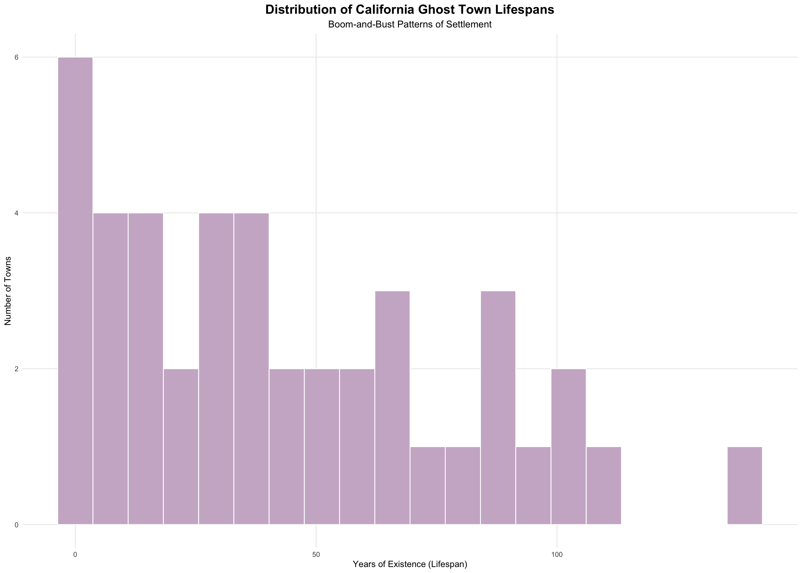
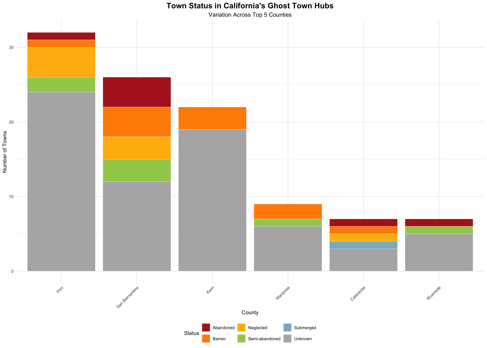

California’s ghost towns constitute the spatial remnants of formerly active settlements that declined or were ultimately abandoned as economic conditions, resource availability, and transportation networks evolved. Many originated during periods of rapid frontier expansion - most notably the 1848 Gold Rush and subsequent silver and copper booms - while others developed in connection with railroad construction, specialized agriculture, or short-lived industrial enterprises. In most cases, these settlements were closely tied to a single economic function; when the supporting system contracted or the primary resource was depleted, populations dispersed. The resulting landscape preserves a material record of speculative and highly mobile forms of settlement, in which long-term community stability was frequently subordinate to the immediate extraction of economic value.
# Load all required packages quietly
suppressMessages({
library(tidyverse)
library(rvest)
library(janitor)
library(leaflet)
library(crosstalk)
})The dataset for this analysis is compiled from tables on Wikipedia’s “List of ghost towns in California” page, which documents known abandoned or semi-abandoned settlements across the state. The table includes information on each town’s status, founding and abandonment dates, and geographic coordinates. Because the structure is relatively standardized, the scraper retrieves the full table in a single pass and prepares it for downstream cleaning and analysis.
The raw table contains a mixture of structured fields and inconsistently formatted text, including embedded citation markers, alternate naming conventions, and coordinate strings stored as text. To produce a usable dataset, unnecessary columns such as remarks and alternate names are removed, and all character fields are cleaned to strip bracketed references. The status variable is standardized to ensure consistent labeling across categories such as “Abandoned,” “Barren,” and “Semi-abandoned.”
Geographic coordinates are extracted from text using regular expressions, separating latitude and longitude into numeric variables suitable for mapping. Founding and abandonment dates are similarly parsed to extract four-digit years, allowing the calculation of each town’s lifespan. These derived variables transform the dataset from a descriptive list into a structured record of settlement duration and spatial distribution.
# ---- 1. Scrape table ----
url <- "https://en.wikipedia.org/wiki/List_of_ghost_towns_in_California"
ca_raw <- read_html(url) %>%
html_node("table.wikitable") %>%
html_table(fill = TRUE) %>%
clean_names()
# ---- 2. Clean table ----
ca_final <- ca_raw %>%
# Drop junk columns
select(-any_of(c("x", "remarks", "other_names"))) %>%
# Clean citation noise (ex. [1])
mutate(across(where(is.character), ~str_remove_all(., "\\[\\d+\\]"))) %>%
# Standardize the status column
mutate(
status = str_squish(status), # Remove hidden spaces
status = str_to_title(status), # Capitalize: "Abandoned", "Barren"
# Force both "Semiabandoned" and "Semi-Abandoned" into one format
status = str_replace_all(status, "Semiabandoned", "Semi-abandoned"),
status = str_replace_all(status, "Semi-Abandoned", "Semi-abandoned")
) %>%
# Extract numeric data and drop originals
mutate(
lat = as.numeric(str_extract(latitude_longitude, "\\d+\\.\\d+(?=°N|;)")),
lng = as.numeric(str_extract(latitude_longitude, "(?<=;|\\s)\\d+\\.\\d+(?=°W)")) * -1,
founded_year = as.numeric(str_extract(founded, "\\d{4}")),
abandoned_year = as.numeric(str_extract(abandoned, "\\d{4}")),
lifespan = abandoned_year - founded_year
) %>%
# Final clean-up and map-readiness
select(-founded, -abandoned, -latitude_longitude) %>%
# Remove "Out of Bounds" points
filter(lat < 42 & lat > 32,
lng < -114 & lng > -125)
head(ca_final)## # A tibble: 6 × 8
## town county status lat lng founded_year abandoned_year lifespan
## <chr> <chr> <chr> <dbl> <dbl> <dbl> <dbl> <dbl>
## 1 Agua Fria Mariposa Barren 37.5 -120. 1850 1862 12
## 2 Agua Mansa San Bern… Barren 34.0 -117. 1853 1862 9
## 3 Alma Santa Cl… Subme… 37.2 -122. 1861 1952 91
## 4 Amboy San Bern… Semi-… 34.6 -116. 1858 NA NA
## 5 Ashford Mill Inyo Negle… 35.9 -117. 1914 NA NA
## 6 Ash Hill San Bern… Negle… 34.7 -116. NA NA NAOn average, California ghost towns persisted for approximately 46.4 years, with a median lifespan of 40 years and a maximum observed duration of 119 years. Rather than representing long-lived communities that underwent a slow, natural decline, these figures point to a pattern of relatively ephemeral settlements shaped by cycles of rapid growth and systemic collapse. Many towns appear to have emerged as “pop-up” urban centers in response to specific, high-volatility economic opportunities and disappeared within a few decades once those opportunities diminished.
The lower end of the distribution reinforces this pattern of “transient urbanism.” Several settlements lasted as little as two years, suggesting highly speculative ventures or flash-in-the-pan booms that failed to establish the foundational infrastructure necessary to sustain a stable population. In contrast, the smaller number of towns that persisted for over a century likely reflect locations that were either economically diversified or strategically situated near evolving transportation hubs. This creates a right-skewed distribution in which most towns cluster within a narrow lifespan, while a few outliers - often those that transitioned from mining to tourism or ranching - extend far beyond the mean.
The total number of towns with valid lifespan data (33) also demonstrates a significant limitation regarding data provenance. Many entries lack precise founding or abandonment dates, particularly for smaller, less-documented camps that existed outside of formal census records. Consequently, the analysis is constrained to a subset of settlements with more robust historical documentation, which may overrepresent prominent communities while understating the true frequency of the most short-lived camps.
summary_stats <- ca_final %>%
filter(!is.na(lifespan)) %>%
summarize(
Avg_Lifespan = round(mean(lifespan), 1),
Median_Lifespan = median(lifespan),
Shortest_Life = min(lifespan),
Longest_Life = max(lifespan),
Total_Towns = n()
)
print(summary_stats)## # A tibble: 1 × 5
## Avg_Lifespan Median_Lifespan Shortest_Life Longest_Life Total_Towns
## <dbl> <dbl> <dbl> <dbl> <int>
## 1 43.8 39 0 139 43# ---- 1. Create a subset of only towns that have a valid lifespan ----
plotting_data <- ca_final %>%
filter(!is.na(lifespan))
# ---- 2. Plot ----
ggplot(plotting_data, aes(x = lifespan)) +
geom_histogram(fill = "thistle3", color = "white", bins = 20) +
theme_minimal() +
theme(
plot.title = element_text(hjust = 0.5, face = "bold", size = 16),
plot.subtitle = element_text(hjust = 0.5, size = 12),
panel.grid.minor = element_blank()
) +
labs(
title = "Distribution of California Ghost Town Lifespans",
subtitle = "Boom-and-Bust Patterns of Settlement",
x = "Years of Existence (Lifespan)",
y = "Number of Towns"
)
The counties with the highest concentrations of ghost towns are largely situated in California’s historic mining and railroad districts, where settlement patterns were dictated by the geography of resource extraction. However, the present-day condition of these sites is not consistently documented. Across the primary “hubs” - led by Inyo (32 towns), San Bernardino (26), and Kern (21) - the most frequent designation is “Unknown,” a category that reveals as much about the fragility of crowd-sourced historical data as it does about the towns themselves.
While some “Unknown” designations result from geographic isolation in remote basins, the prevalence of this label across accessible areas reveals a significant metadata lag. In many cases, individual settlement pages (such as that of Moore’s Flat) contain detailed qualitative descriptions of a site’s “Barren” or “Neglected” state, yet these updates are not always reflected in the state-wide summary tables. This “information silo” effect means that the transition from a descriptive record to a structured data category is often incomplete. Consequently, the “Unknown” status frequently reflects a lack of administrative synchronization between Wikipedia’s disparate layers of documentation.
Where status information is finalized, a varied picture of “post-settlement life” emerges. San Bernardino County, for instance, shows a relatively even spread across abandoned, barren, neglected, and semi-abandoned classifications. This diversity indicates that decline did not follow a uniform path; while some sites have been reclaimed by the landscape (“Barren”), others persist in a state of arrested decay (“Neglected”) or continue to support vestigial populations (“Semi-abandoned”). Collectively, these patterns suggest that the “ghost town” label encompasses a wide spectrum of survival, often obscured by the limitations of the master record.
# ---- 1. Identify top 5 counties ----
top_counties_list <- ca_final %>%
count(county, sort = TRUE) %>%
slice_max(n, n = 5) %>%
pull(county)
# ---- 2. Plot ----
ca_final %>%
# Handle empty status strings
filter(county %in% top_counties_list) %>%
mutate(status = ifelse(status == "" | is.na(status), "Unknown", status)) %>%
ggplot(aes(x = reorder(county, -table(county)[county]), fill = status)) +
geom_bar(position = "stack", color = "white", linewidth = 0.2) +
# Manual color assigments
scale_fill_manual(values = c(
"Abandoned" = "firebrick",
"Barren" = "darkorange",
"Neglected" = "darkgoldenrod1",
"Semi-abandoned" = "darkolivegreen3",
"Submerged" = "lightskyblue3",
"Unknown" = "grey70"
)) +
theme_minimal() +
theme(
plot.title = element_text(hjust = 0.5, face = "bold", size = 16),
plot.subtitle = element_text(hjust = 0.5, size = 12),
legend.position = "bottom",
axis.text.x = element_text(angle = 45, hjust = 1)
) +
labs(
title = "Town Status in California's Ghost Town Hubs",
subtitle = "Variation Across Top 5 Counties",
x = "County",
y = "Number of Towns",
fill = "Status"
)
While summary statistics highlight patterns in lifespan and classification, the spatial distribution of these sites provides essential context for understanding the boom-and-bust cycles of California’s development. The interactive map displays the locations of recorded ghost towns, revealing a distinct inland bias that reflects the contrast between California’s enduring maritime ports and its more ephemeral, resource-driven interior.
However, the geographic record is incomplete due to a form of spatial omission: approximately 92 settlements identified in the historical record (including prominent sites such as Moore’s Flat) are not represented in this visualization because structured coordinate data are absent from the primary master table. This absence indicates that, although these locations are documented in qualitative historical sources, they have not been verified in a format suitable for geospatial analysis. Consequently, the points displayed here represent only the subset of California’s ruins for which standardized coordinate data are available, rather than the full set of historically attested sites.
Ghost towns concentrate heavily along the Sierra Nevada “Mother Lode” and the arid eastern borders, while coastal and urbanized regions contain relatively few sites. This distribution reflects the economic foundations of these settlements, which were tied to frontier expansion rather than long-term metropolitan sustainability. By filtering the data by status or county, one can observe how different “eras” of abandonment are clustered: the Gold Rush ruins of the north, the railroad depots of the central valleys, and the isolated mining camps of the Mojave. Ultimately, this spatial record serves as a testament to the volatility of the California Dream, mapping the points where ambition was eventually overtaken by environmental or economic reality.
# ---- 1. Prepare the data for the map ----
map_data <- ca_final %>%
mutate(status = ifelse(status == "" | is.na(status), "Unknown", status))
# ---- 2. Wrap the cleaned data in the SharedData object ----
shared_ca <- SharedData$new(map_data)
# ---- 3. Create the dashboard ----
bscols(
widths = c(3, 9),
list(
filter_select("county_filter", "Select a County:", shared_ca, ~county),
filter_checkbox("status_filter", "Town Status:", shared_ca, ~status)
),
leaflet(shared_ca, height = 550) %>%
addProviderTiles(providers$CartoDB.DarkMatter) %>%
addCircleMarkers(
lat = ~lat,
lng = ~lng,
color = "orangered",
radius = 6,
stroke = FALSE,
fillOpacity = 0.8,
popup = ~paste0(
"<div style='text-align:center;'>",
"<b>", town, "</b><br>",
"County: ", county, "<br>",
"Lifespan: ", ifelse(is.na(lifespan), "Unknown", paste(lifespan, "yrs")),
"</div>"
)
)
)